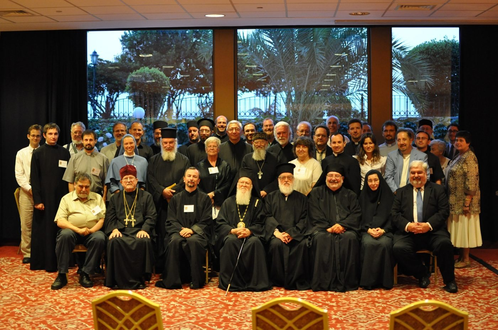
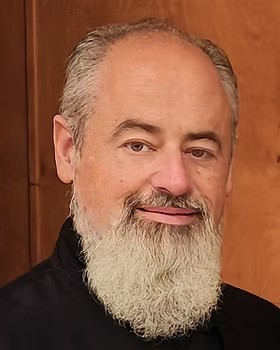
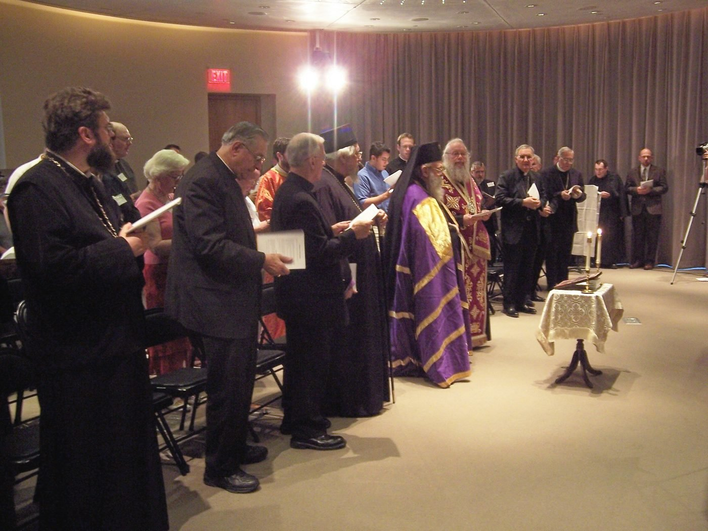
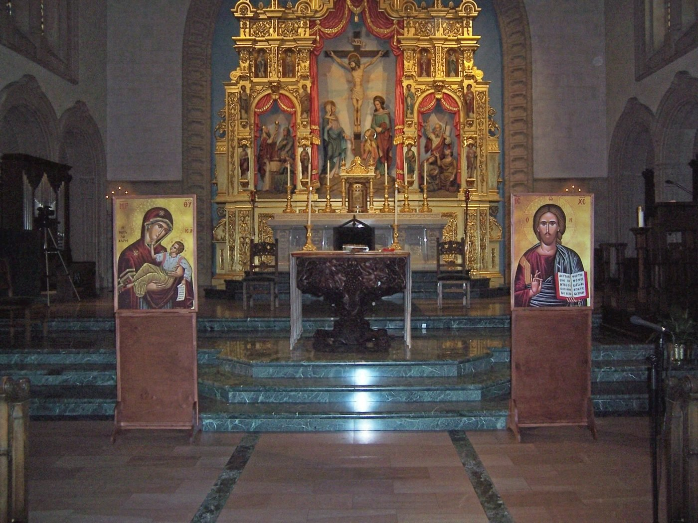

About
The Orientale Lumen Institute
The Institute is the educational work of the Orientale Lumen Foundation, which has gathered Eastern Orthodox, Eastern Catholics and Roman Catholics to pray and learn together since 1997.
The group of attendees at the OL EuroEast III Conference gather around Ecumenical Patriarch Bartholomew for a photo at the opening session.
Founders
The founders
Jack Figel
Founder of the Orientale Lumen Foundation and its conferences, and publisher of Eastern Christian Publications. He recorded and edited the Kallistos lectures.

Rev. Dr. Thomas Colyandro
Author of the Institute’s academic plan, from its graduate programs to its retreats and pilgrimages.
Andrew Likoudis
Grandson of James Likoudis, Catholic scholar of East and West. Founder and President of the Likoudis Legacy Foundation and Editor-in-Chief of The Kydones Review.
Our roots
Thirty years of Orientale Lumen
The Institute grows out of three decades of conferences, pilgrimages, and recordings that brought Catholics and Orthodox together.
- 1993
Eastern Christian Publications
Jack Figel founds the publishing house that now carries the Kallistos volumes.
- 1997
The first Orientale Lumen Conference
Named for Pope John Paul II’s 1995 apostolic letter and planned with Bishop Kallistos, it draws about a hundred people to Washington.
- 2002
Across the Atlantic
Orientale Lumen Europe West meets in Birmingham, England.
- 2004
To Constantinople
The first OL EuroEast conference is held in Istanbul.
- 2007
Welcomed by the Ecumenical Patriarch
Patriarch Bartholomew addresses OL EuroEast II. That year the conference also meets in San Diego and in Melbourne.
- 2009
Recording in Oxford
Lectures begin in Metropolitan Kallistos’s study, the start of a decade of recordings.
- 2010
Istanbul and Halki
Patriarch Bartholomew opens OL EuroEast III, followed by a pilgrimage to Ephesus and Patmos led by Kallistos.
- 2014
Light of the East
The first Light of the East pilgrimage goes to Rome and Constantinople, with audiences with Pope Francis and Patriarch Bartholomew.
- 2020
Online
OL XXIV meets virtually, as does OL XXV in 2021.
- 2022
Memory eternal
Metropolitan Kallistos falls asleep in the Lord in Oxford. OL XXVII, in 2023, is given to his teachings.
- 2023
Honored for ecumenical leadership
Jack Figel receives the National Council of Churches’ J. Irwin Miller Award.
- 2025
Lectures from Oxford
The six volumes win first place from the Catholic Media Association. In July, pilgrims present Pope Leo XIV with icons of Saints Peter and Andrew.
- 2026
Thirty conferences
OL XXX gathers Catholic and Orthodox bishops at the Saint John Paul II National Shrine.
See the conference themes, 1997 to 2024
- OL I1997Orientale Lumen, the Light from the East
- OL II1998Ut Unum Sint
- OL III1999Mary the Mother of God and the Church
- OL IV2000Eucharist: Prayer for Unity
- OL V2001Primacy and Conciliarity: Finding a Common Vision
- OL VI2002Eastern Catholic Churches: Window between East and West?
- OL VII2003Patriarchates: Ancient Model for Future Church Unity?
- OL VIII2004What’s Our Bottom Line?
- OL X2006Church Unity before 2054?
- OL XI2007Icons: Expressions of Our Faith
- OL XII2008Feast Days of the Eastern Churches
- OL XIII2009Monastic Spirituality for Everyday Life
- OL XIV2010The Councils of the Church
- OL XV2011Rome and the Communion of Churches: Bishop, Patriarch or Pope?
- OL XVI2012Theology of the Laity
- OL XVII2013Steps Toward a Reunited Church
- OL XVIII2014Ecumenical Dimensions of Marriage
- OL XIX2015The Bishop of Rome: Past, Present, Future
- OL XX2016Creation: Our Shared Inheritance
- OL XXI2017Chieti and Crete: Two Historical Events
- OL XXII2018Sister Churches: Fact or Fiction?
- OL XXIII2019One City, One Bishop: Church Boundaries, Past, Present and Future
- OL XXIV2020Liturgy and Icons: Worshiping with Images
- OL XXV2021Liturgy and Scripture: Praying the Word of God
- OL XXVII2023Teachings of Kallistos of Diokleia
- OL XXVIII2024Primacy in the 21st Century
Mission
The Orientale Lumen Institute (OL Institute) seeks to cultivate an ethos that connects theological, biblical, and spiritual education with a personal and pastoral development that values grassroots ecumenical dialogue, particularly between Orthodox and Catholics in the variety of their Eastern, Oriental, and Western rites.
Vision
To become a premier center for spiritual, biblical, and theological education in the English-speaking world, known for academic and spiritual depth, grassroots ecumenical dialogue and adherence to tradition, the formation of ecclesial and educational leaders, and innovative technology and published works.
- Tradition-Grounded. Rooted in patristic wisdom, scholarly excellence, and spiritual life.
- Ecumenically Inquisitive. Fostering dialogue while maintaining Orthodox and Catholic identity.
- Globally Accessible. Delivering information and knowledge online.
Advisory Bodies
Planned. These bodies will be formed as the Institute opens.
- Board of Trustees
- Governance and oversight
- Academic Senate
- Curriculum and standards
- Spiritual Advisory Council
- Clergy, monastics, and laypeople
- Ecumenical Advisory Committee
- Inter-church relations


Contact Us
Drop us a line
Questions about programs, retreats, pilgrimages, or the Kallistos lectures are welcome.
- Address
- 3574 University Drive
Fairfax, VA 22030 - Phone
- +1 703-691-8585
 Likoudis Legacy Foundation
Likoudis Legacy Foundation